Aula8-65: Fenômenos ondulatórios
Uma onda, ao encontrar um obstáculo ou outra onda, comporta-se de modos que a física já conhece bem. Esses modos são chamados fenômenos ondulatórios. Nesta aula, estudaremos sete fenômenos ondulatórios:
|
|
|
|
-
Absorção
-
Reflexão
-
Refração
-
Difração
-
Polarização
-
Ressonância
-
Interferência
Absorção
É o fenômeno ondulatório que retira energia das ondas, fazendo suas amplitudes decaírem. Esse fenômeno ocorre com todos os tipos de ondas.
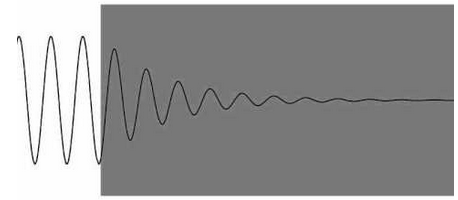
Ex.:
I. Os raios solares perdem energia, tendo suas amplitudes reduzidas, à medida que percorrem a atmosfera;
Reflexão
Uma onda que se propaga num determinado meio, ao encontrar um obstáculo, pode não conseguir atravessá-lo e, então, permanece no mesmo meio, mantendo o mesmo módulo de velocidade, mas não o mesmo sentido. A esse fenômeno chamamos reflexão.
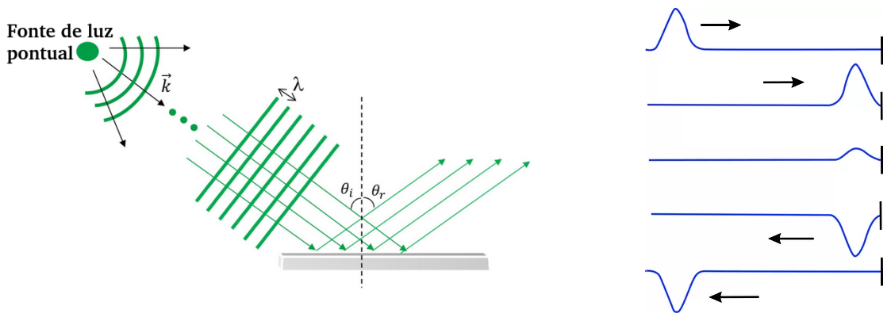
Refração
|
É o fenômeno físico que faz a luz (ou qualquer outra onda eletromagnética) alterar sua velocidade ao passar de um meio a outro. Observe a figura ao lado. Uma onda eletromagnética possui uma “largura”; quando ela penetra outro meio, parte da frente de onda entra primeiro, enquanto a outra parte permanece no meio de origem. A parte que já adentrou o novo meio passa a ter a velocidade desse meio e, por isso, faz a onda desviar sua trajetória em muitos casos, mudando de direção. |
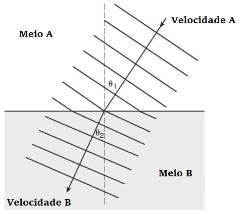 |
➔ DISPERSÃO LUMINOSA (REFRAÇÃO DE LUZ POLICROMÁTICA)
As ondas eletromagnéticas, ao se propagarem no vácuo, possuem a mesma velocidade, independentemente da frequência; nos demais meios, porém, a velocidade varia de acordo com a frequência em que vibram: nesses casos, a velocidade é inversamente proporcional à frequência. Se, excetuando o vácuo, a velocidade da luz varia com a frequência, então o índice de refração da luz naquela frequência também variará, pois
Ex.:
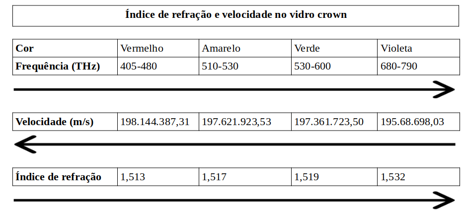
|
Considerando, então, que ondas de frequências diferentes passam para outro meio com velocidades diferentes entre si, podemos afirmar que elas se refratam de modo diferente. Ao passar por um dioptro (superfície que separa dois meios) obliquamente, as ondas desviam-se com maior ou menor acentuação. Esse fenômeno é chamado dispersão luminosa. Veja a figura ao lado: |
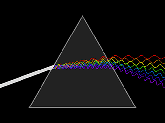 |
Difração
É o fenômeno ondulatório que faz as ondas contornarem obstáculos.
➔ PRINCÍPIO DE HUYGENS
Esse princípio revela que todos os pontos de uma frente de onda comportam-se como fontes de ondas secundárias, que se propagam em todas as direções e com velocidade igual à da onda principal.
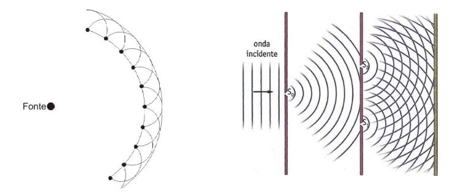
Observe a imagem e note como esse princípio explica o fenômeno da difração. Quando uma frente de onda encontra um obstáculo, muitos pontos dessa frente são barrados; no entanto, os que não são barrados comportam-se como emissores de ondas, que se propagam em todas as direções, conforme o enunciado acima.
Obs.: As frentes de onda só produzem difração visível quando lhes é interposto um anteparo/orifício de largura com ordem de grandeza semelhante à do comprimento de onda. Assim, a luz, que tem comprimento de onda muito pequeno, só difrata em orifícios minúsculos; já o som, que tem comprimento de onda grande, difrata em orifícios grandes; por isso o som é capaz de contornar, por exemplo, janelas, prédios etc.
|
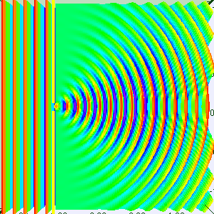 |
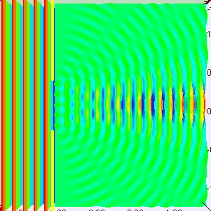 |
Ex.:
I. Duas pessoas conversam através de um muro que as separa.
Polarização
É o fenômeno ondulatório que canaliza ondas (mecânicas ou eletromagnéticas) numa determinada direção.
As ondas podem se propagar oscilando difusamente, isto é, oscilando em inúmeras direções aleatórias (caso comum às ondas eletromagnéticas). Quando isso ocorre e desejamos obter ondas oscilando numa única direção, podemos usar diferentes tipos de instrumentos (os polarizadores) para atingir esse propósito. O fenômeno físico explorado pelos polarizadores, capaz de reduzir as inúmeras direções de oscilação a uma única, é denominado polarização.
Ex.:
I. Alguns óculos possuem lentes polarizadoras, que restringem a passagem de ondas que vibram em direções aleatórias. Com isso, esses óculos eliminam reflexos indesejáveis.
|
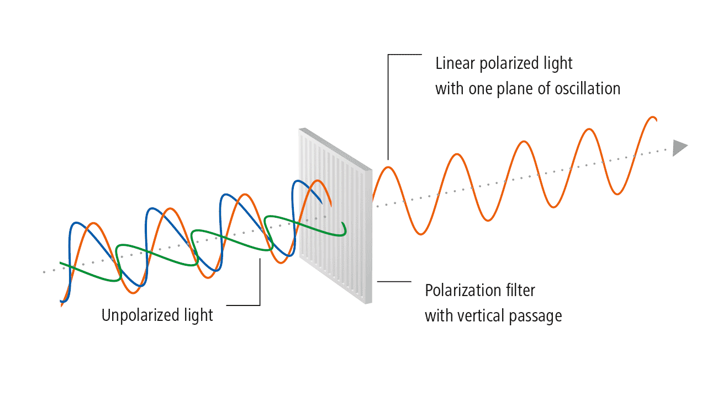 |
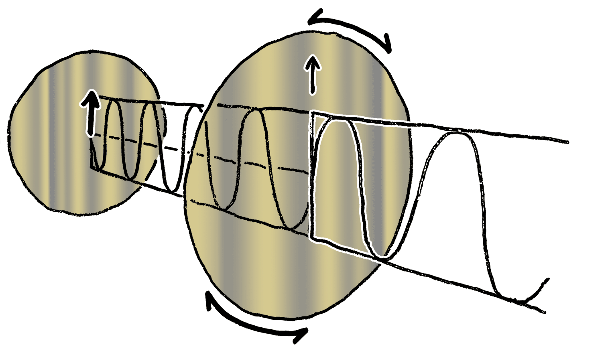 |
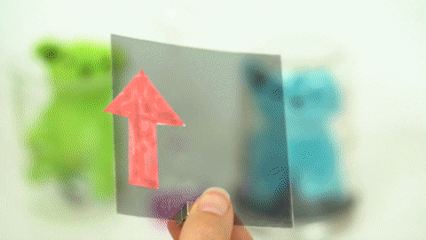 |
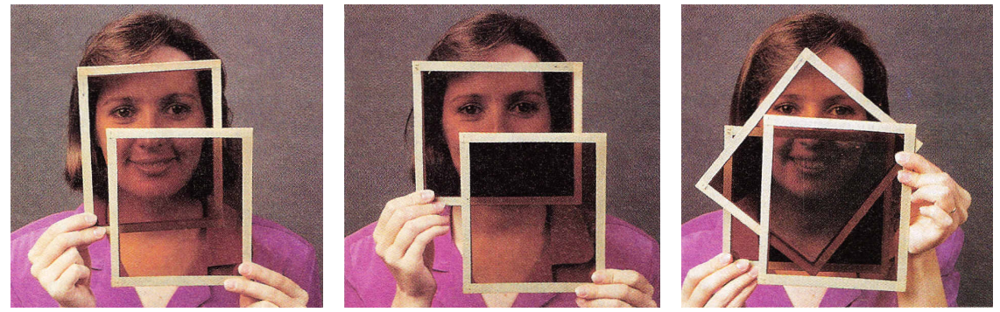
Ressonância
Todo corpo possui uma frequência natural de oscilação, pois os corpos estão em constante estado de oscilação (embora, na maioria das vezes, isso fuja à nossa percepção, já que a amplitude de oscilação da imensa maioria das coisas é imperceptível). Essa frequência é determinada por características específicas de cada corpo: no caso de um pêndulo, por exemplo, depende da intensidade da aceleração gravitacional e do comprimento da corda; no caso de um prédio, depende, entre outras coisas, de sua altura.
Se uma onda que oscila numa frequência equivalente à frequência natural de oscilação de um corpo o atingir, o corpo passará a vibrar em concordância com essa onda e, consequentemente, a amplitude das oscilações será amplificada. A esse fenômeno damos o nome de ressonância.
Ex.:
I. Uma taça de cristal se quebra ao ser atingida por ondas sonoras que vibram na mesma faixa de frequência da oscilação natural dela;
II. Terremotos produzem ondas mecânicas que vibram em torno de 0 a 15 Hz; se essas ondas encontrarem um prédio cuja frequência de oscilação natural seja igual à da onda proveniente do terremoto, a amplitude de oscilação do prédio será maximizada e sua estrutura poderá ser danificada;
III. Caso da ponte de Broughton: em 14 de abril de 1831, a ponte de Broughton, na Inglaterra, caiu enquanto tropas marchavam sobre ela. As investigações concluíram que a ponte estava prestes a ruir, situação agravada quando a vibração da marcha dos soldados se aproximou da frequência de ressonância da ponte;
IV. A ponte Tacoma Narrows sofreu colapso total em 1940, após ser atingida por fortes rajadas de vento que provocaram oscilações na estrutura;
V. O Lockheed Electra II foi uma aeronave que começou a ser comercializada no final da década de 1950. Esse avião possuía ajustes em seu motor que o faziam vibrar e entrar em ressonância com a fuselagem; esse fenômeno fazia com que o avião literalmente se desmantelasse em pleno voo, causando acidentes fatais. As aeronaves foram reajustadas depois que os engenheiros perceberam o problema.
|
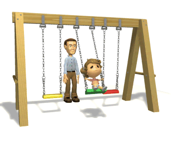 |
Interferência (princípio da superposição de ondas)
Duas ondas, ao se sobreporem, somam-se algebricamente em cada ponto de encontro, formando uma onda com essa amplitude resultante. Se as ondas sobrepostas possuírem fases opostas, elas se “aniquilam”. Se possuírem fases iguais, elas se intensificam. Em casos intermediários, em que as fases não são exatamente iguais nem opostas, ocorrerá uma soma ou uma destruição parcial das ondas.
➔ INTERFERÊNCIA DE PULSOS UNIDIMENSIONAIS
|
Pulsos sobrepostos de fases opostas |
Pulsos sobrepostos de fases concordantes |
|
|
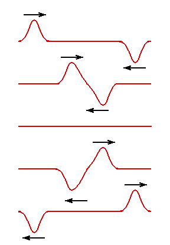 |
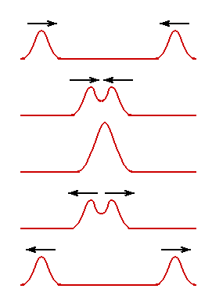 |
|
|
Esse tipo de interferência é também chamado de interferência destrutiva. |
Esse tipo de interferência é também chamado de interferência construtiva. |
➔ INTERFERÊNCIA DE ONDAS UNIDIMENSIONAIS
A diferença de fase entre ondas é a distância, normalmente dada em graus, entre pontos iguais e consecutivos de duas ondas.
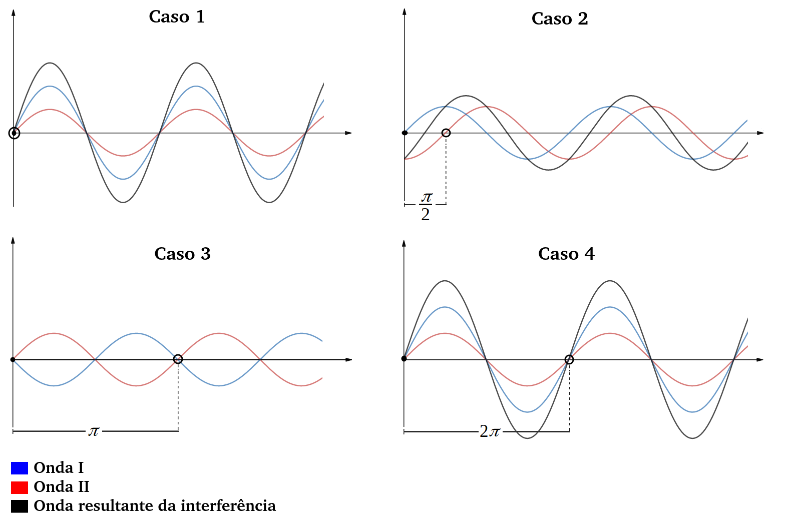
A diferença de fase entre ondas decorre da disparidade entre as emissões das ondas pelas fontes.
Quando as ondas são emitidas alinhadamente (caso 1), não há diferença de fase entre elas; dizemos, então, que as ondas possuem a mesma fase e, como podemos perceber, formam um padrão de interferência construtivo. Quando as ondas são emitidas com um atraso de um comprimento de onda inteiro (caso 4), dizemos que uma onda está defasada em relação à outra em e, nesse caso, também formam um padrão de interferência construtivo (na verdade, qualquer defasagem de
, gerará esse tipo de interferência).
Nos casos em que uma onda está defasada em relação à outra em (caso 4), as ondas formam um padrão de interferência destrutivo (na verdade, haverá interferência destrutiva sempre que a defasagem for tal que
). Note também que, embora a interferência seja destrutiva, só haverá cancelamento total da onda se as amplitudes forem iguais; caso contrário, haverá um cancelamento parcial das ondas.
➔ INTERFERÊNCIA DE ONDAS BIDIMENSIONAIS
Na imagem abaixo, A e B são fontes de ondas circulares de mesma frequência que se propagam num mesmo meio. As linhas cheias representam os picos das ondas; portanto, o cruzamento dessas linhas indica as interferências construtivas. As linhas tracejadas representam os vales; assim, o cruzamento de linhas cheias com tracejadas indica as interferências destrutivas.
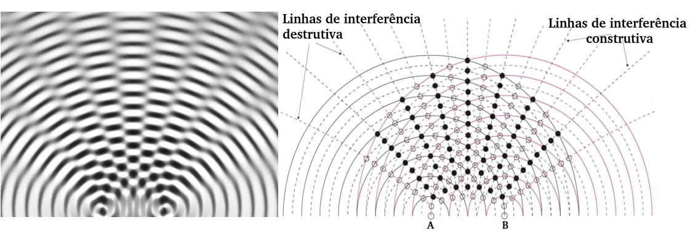
➔ INTERFERÊNCIA DE ONDAS TRIDIMENSIONAIS
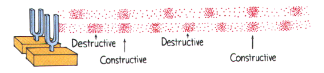
➔ BATIMENTO
Chamamos de batimento o fenômeno da interferência quando duas ondas de frequências muito próximas se sobrepõem. O resultado dessa superposição é uma onda resultante cuja amplitude varia, formando pacotes de onda. A impressão sonora que temos ao captar essas ondas é de que o som oscila em intensidade.
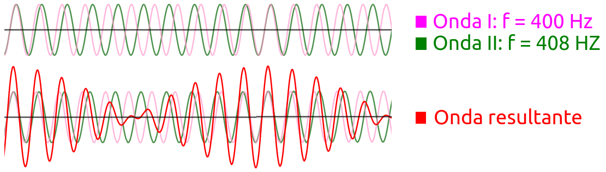
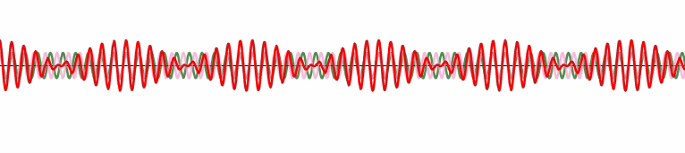
➔ IRIDESCÊNCIA
|
É o fenômeno observado quando a luz incide sobre uma película fina. Quando um raio de luz incide sobre uma película, parte da onda penetra a película e parte é refletida (invertendo ou não a fase); a parte que adentra a película sofre uma nova reflexão parcial ao encontrar o meio externo e, então, reflete novamente. O primeiro raio refletido encontra o segundo, que pode ou não estar defasado em relação ao primeiro. Essa possibilidade de defasagem pode fazer com que haja interferências construtivas ou destrutivas. Geralmente, quando luz branca incide sobre uma película, há reforço de ondas de determinadas frequências e enfraquecimento de ondas de outras frequências. |
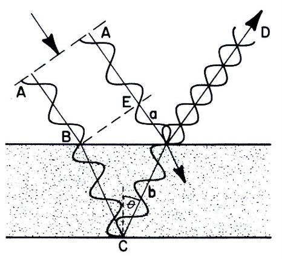 |
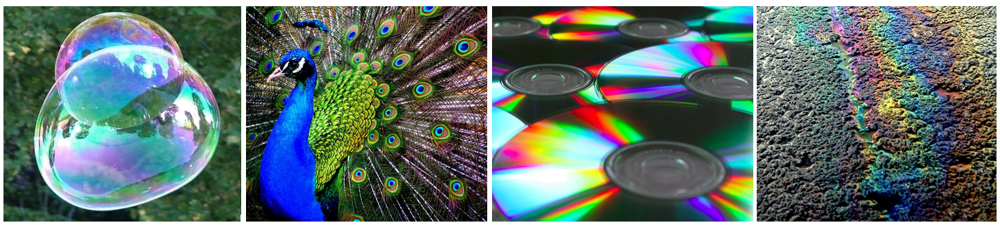